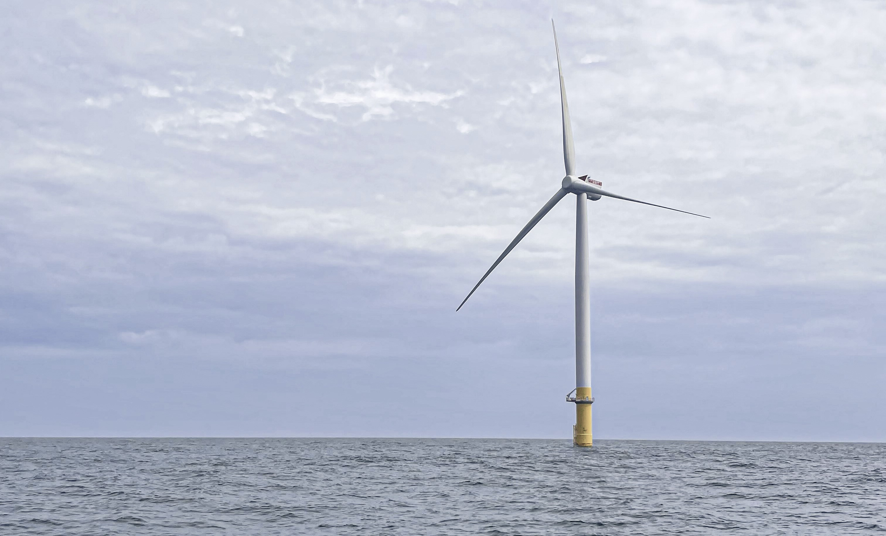
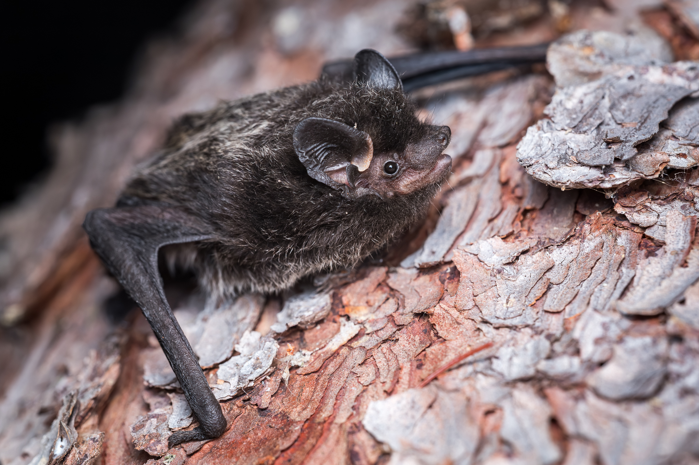

Land Acknowledgement
Biodiversity Pathways respectfully acknowledges that our work takes place on treaty lands as well as the traditional and unceded territories of First Nations, Inuit, and Métis Peoples across all regions of Canada, whose histories, languages, and cultures are deeply connected to the biodiversity we monitor. We acknowledge the traditional teachings of the lands that we work on, and that reciprocal, meaningful, and respectful relationships with Indigenous peoples make our work possible. We are deeply grateful for their stewardship of these lands, and we are committed to supporting Indigenous-led monitoring programs, while learning Indigenous ways of knowing, being, and doing.

Background
There is a growing need to understand bat activity in offshore environments as the exploration and development of offshore wind energy facilities expands. Several bat species are known to use offshore routes during migration and movement, including three Canadian migratory species, Hoary Bat (Lasiurus cinereus), Eastern Red Bat (Lasiurus borealis), and Silver-haired bat (Lasionycteris noctivagans), which have been assessed as Endangered by COSEWIC (Solick and Newman 2021; Canada and Change 2024).
To better understand bat use of offshore environments and assess the potential impacts of offshore wind energy facilities, the Canadian Wildlife Service is monitoring bats offshore using both stationary and mobile acoustic detectors, following the guidelines set forth by the Regional Wildlife Science Collaborative for Offshore Wind (RWSC, n.d.).

Methods
The Canadian Wildlife Service deployed acoustic units to record bats at 13 stationary sites along the maritime coastline, and 5 mobile transects on 5 different vessels (Cartier, DFO-Discovery, NRCAN-Discovery, Coriolis, and James Cook). The NRCAN-Discovery vessel carried 3 microphones positioned on different sections of the ship (main mast, met mast A, and met mast B). The James Cook vessel had two microphones positioned on different sections of the ship (main and met mast). Sampling occurred mainly in the summer and fall of 2025, with additional sampling from 2024 and 2026 submitted for review.
Data processing
Full-spectrum recordings from the sampling periods were processed using two automatic classifiers: Kaleidoscope’s Bats of North America 5.4.0 classifier and Sonobat 3.0’s Northeastern North America classifier. Manual identification efforts focused on 7 species: Big Brown Bats (Eptesicus fuscus), Silver-haired Bats (Lasionycteris noctivagans), Hoary Bat (Lasiurus cinereus), Eastern Red Bat (Lasiurus borealis) Little Brown Myotis (Myotis lucifugus), Northen Myotis (Myotis spententrionalis) and Tri-colored bat (Perimyotis subflavus).
The analysis workflow followed processing standards established by the North American Bat Monitoring Program (NABat) (Reichert et al. 2018). Only recordings that were identified as a bat by Kaleidoscope were manually verified. All recordings with automated classifications underwent complete manual verification. Species identifications were validated using reference call parameters described by Szewczak (2022) and Vesper (2022) , in accordance with NABat manual vetting protocols (Reichert et al. 2018).
Results and Discussion
In total, 234,137 recordings were submitted to SENSR for review. Of these, 211,376 were identified as Noise by Kaleidoscope, and the remaining 22,761 were manually reviewed and assigned a species or species-grouping ID. Manual verification flagged an additional 2,432 recordings as noise that Kaleidoscope had erroneously identified as bats, leaving a total of 20,335 bat recordings across all sites. Of these, 15 were recorded along the mobile ship-based routes, while the remainder came from stationary acoustic recorders deployed along the coastline (Figure 1).
All species were recorded across the project sites, but detections varied among sites and across the survey months. The most commonly recorded species was the hoary bat (Lasiurus cinereus), with a total of 519 detections, followed closely by the silver-haired bat (Lasionycteris noctivagans) with 488 and the eastern red bat (Lasiurus borealis) with 235. The greatest overall bat activity was recorded at Prim Point Lighthouse, which had its highest activity in June 2025 (Figure 1).
Feeding buzzes were recorded at six of the monitored sites, providing direct evidence of foraging activity rather than commuting flight alone, though this foraging may have been opportunistic rather than reflecting habitual use of these areas. The greatest number of feeding buzzes was recorded at Brier Island (166), followed by Pinkney Point (90), with the remaining four sites contributing smaller numbers. These feeding buzzes originated primarily from recordings identified as silver-haired bats, indicating that this species was actively foraging within the study area. No social calls were detected at any site over the course of the survey.
Overall, the quality of recordings was good. Noise files were numerous across all sites, which was expected based on similar studies and is likely due to the proximity of recording equipment to the ships and lighthouses. We recommend that future sampling continue to follow the Regional Wildlife Science Collaborative for Offshore Wind guidance on sampling techniques.
Appendix A
Species codes and their definitions
CommonName | ScientificName | Code | Definition |
|---|---|---|---|
Big Brown Bat | Eptesicus fuscus | EPFU | Calls that have diagnostic features identifying it as Eptesicus fuscus |
Big Brown Bat / Silver-haired Bat | Eptesicus fuscus / Lasionycteris noctivagans | EPFULANO | Calls that could be attributed to either Eptesicus fuscus or Lasionycteris noctivagans |
Eastern Red Bat | Lasiurus borealis | LABO | Calls that have diagnostic features identifying it as Lasiurus borealis |
Eastern Red Bat / Little Brown Myotis | Lasiurus borealis / Myotis lucifugus | LABOMYLU | Calls that could be attributed to either Lasiurus borealis or Myotis lucifugus |
Eastern Red Bat / Tricolored Bat | Lasiurus borealis / Perimyotis subflavus | LABOPESU | Calls that could be attributed to either Lasiurus borealis or Perimyotis subflavus |
Hoary Bat | Lasiurus cinereus | LACI | Calls that have diagnostic features identifying it as Lasiurus cinereus |
Hoary Bat / Silver-haired Bat | Lasiurus cinereus / Lasionycteris noctivagans | LACILANO | Calls that could be attributed to either Lasiurus cinereus or Lasionycteris noctivagans |
Silver-haired Bat | Lasionycteris noctivagans | LANO | Calls that have diagnostic features identifying it as Lasionycteris noctivagans |
Little Brown Myotis | Myotis lucifugus | MYLU | Calls that have diagnostic features identifying it as Myotis lucifugus |
Little Brown Myotis / Northern Myotis | Myotis lucifugus / Myotis septentrionalis | MYLUMYSE | Calls that could be attributed to either Myotis lucifugus or Myotis septentrionalis |
Northern Myotis | Myotis septentrionalis | MYSE | Calls that have diagnostic features identifying it as Myotis septentrionalis |
Tricolored Bat | Perimyotis subflavus | PESU | Calls that have diagnostic features identifying it as Perimyotis subflavus |
40kHz Frequency Myotis | 40kMyo | Various species of Myotis that have a characteristic frequency in the range of 35-40kHz | |
High Frequency Bat | HIGH FREQUENCY | Various species with pulses having a characteristic frequency higher than ~35kHz | |
Low Frequency Bat | LOW FREQUENCY | Various species with pulses having a characteristic frequency lower than ~30kHz | |
Unknown Bat | NoID | Bat calls but no grouping category applies | |
Feeding buzz | FB | Feeding buzz present in one or more of the recordings | |
Social call | SC | Social call present in one or more of the recordings | |
Noise | Noise | No bat recorded |
Literature Cited
Canada, Environment, and Climate Change. 2024. Hoary Bat (Lasiurus cinereus) Eastern Red Bat (Lasiurus borealis) Silver-haired Bat (Lasionycteris noctivagans): COSEWIC assessment and status report 2023. https://www.canada.ca/en/environment-climate-change/services/species-risk-public-registry/cosewic-assessments-status-reports/hoary-bat-eastern-red-bat-silver-haired-bat-2023.html.
Reichert, Brian, Cori Lausen, Susan Loeb, et al. 2018. A Guide to Processing Bat Acoustic Data for the North American Bat Monitoring Program (NABat).
RWSC, RWSC. n.d. Integrated Science Plan for Offshore Wind, Wildlife, and Habitat in u.s. Atlantic Waters. https://rwscollab.github.io/science-plan/.
Solick, Donald I., and Christian M. Newman. 2021. “Oceanic Records of North American Bats and Implications for Offshore Wind Energy Development in the United States.” Ecology and Evolution 11 (21): 14433–47. https://doi.org/10.1002/ece3.8175.
Szewczak, Joe. 2022. Echolocation Call Characteristics of Eastern North American Bats. https://sonobat.com/download/Eastern_NA_Acoustic_Table.pdf.
Vesper, Bats. 2022. Bat Acoustic Species-Pair Matrix Eastern US/Canada. https://www.batacousticsurveys.com/_files/ugd/a1e0ca_11eef19fd47e4d7cb3684692dd88363c.pdf.